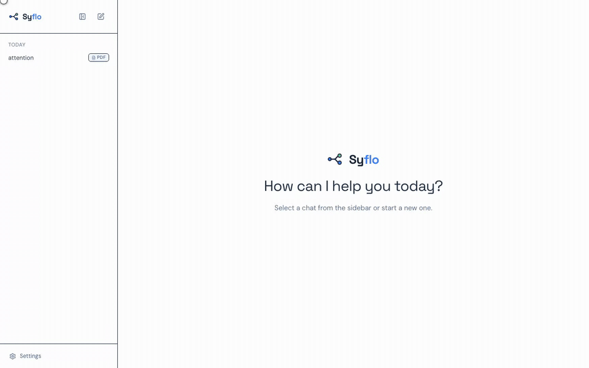
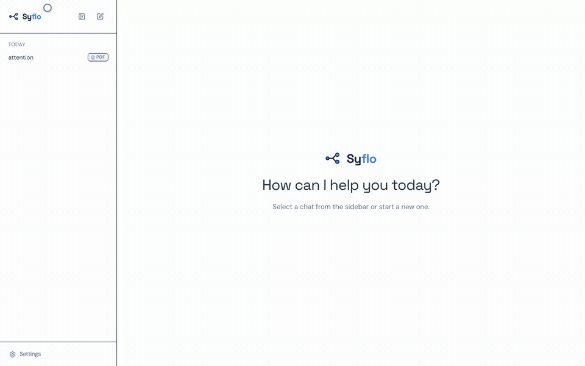
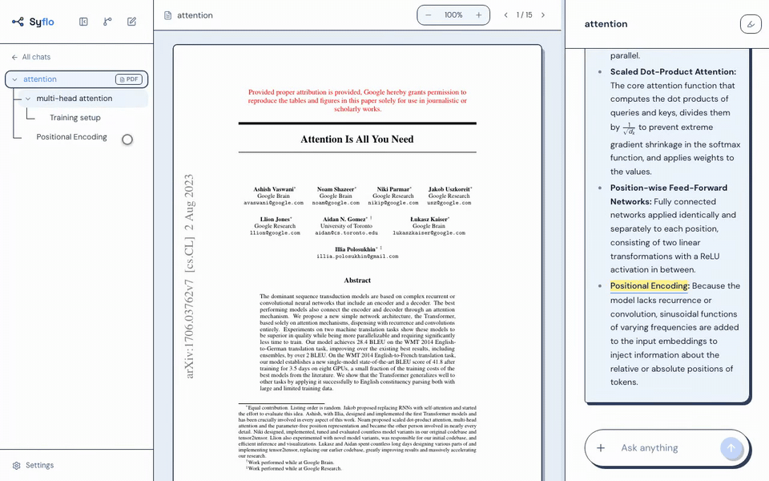
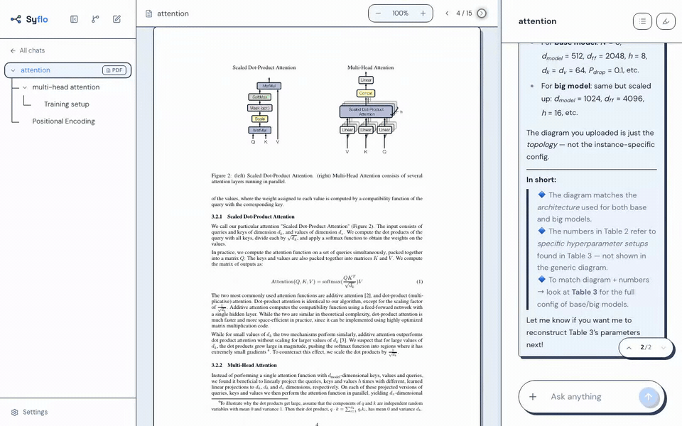
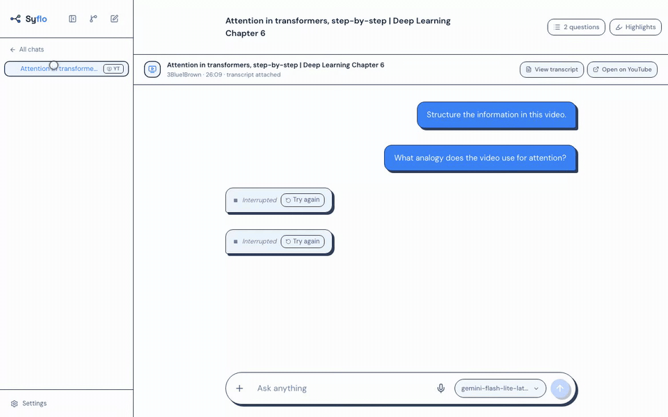
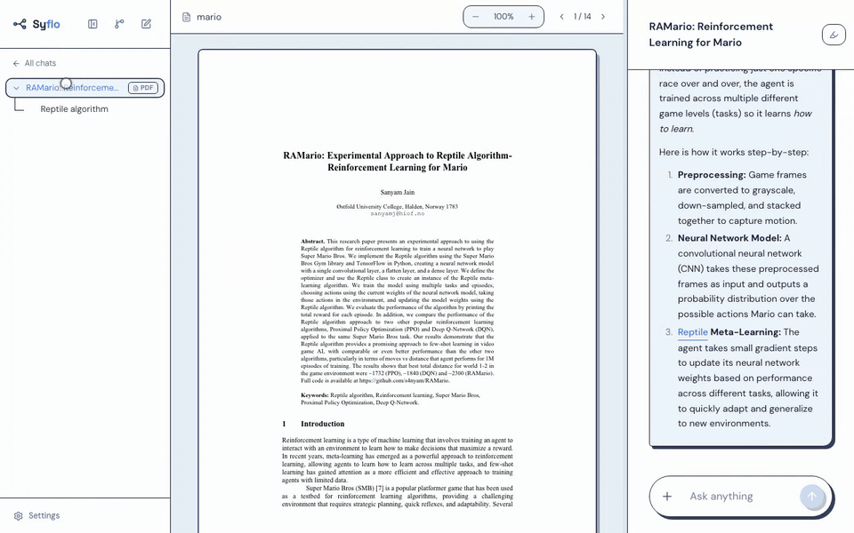

An open letter
Dear Frontier Labs, Linear Chat Is the Wrong Shape for Research
An open letter with GIFs — and an open-source app you're welcome to borrow from.
Dear OpenAI, Anthropic, and Google,
I love your models. I have a complaint about your apps.
Every serious reading session I run in a chat app dies the same death. I paste in a paper, ask a question, and the answer contains three things I don't understand. Now I have a choice: chase all three in sequence and turn the conversation into soup, or pick one and quietly abandon the other two. Either way, by message forty the transcript is half attention mechanisms, half positional encodings, half a tangent about GPUs — and completely impossible to revisit.
The problem isn't your models. It's the shape of the container. Curiosity branches; your apps only scroll.
So I built the app I wanted. It's called Syflo, it's open source, and this letter is a tour of the features I'd like you to borrow — each one demonstrated on the paper your own products are built on.
1. Every tangent becomes its own chat
In Syflo, any word or passage the model writes can be spun off into a branch — a fresh, focused chat that knows where it came from. The root conversation stays clean. The tangents each get their own room. And the whole thing is navigable as a mind map, so a week later I can see how my thinking branched instead of scrolling through an archaeology dig.

And that mind map is not a poster — it's the navigation. Every node is a chat; click one and you're standing in it, with the conversation right below. Walking an old research tree this way beats scrolling a 200-message transcript in every way I can measure.

2. Branching is context engineering, not a mind-map gimmick
This is the part I care about most — and the part I'd honestly love someone at a lab to poke holes in. The win isn't visual; it's what each branch sends to the model.
A branch in Syflo inherits exactly its path to the root: the direct parent chat verbatim, grandparents compressed to cached ~120-word summaries, plus the chain of words it was spawned from. Sibling branches are never included — my tangent about GPU efficiency has no business polluting the context of my question about positional encodings. A linear chat pays for every message ever sent, on every turn, and the model has to find the needle itself. A branch pays for a curated spine.
The result: deeper follow-up chains at a fraction of the tokens, answers that stop drifting, and a KV-cache-friendly prefix that stays stable per branch. This one feature is why I stopped fighting my chat history and started trusting it.
3. A tree grows around a source
Research starts from something — so in Syflo every tree can be grounded in one source, bound to its root. Search for a paper by name and get the PDF fetched for you; drop in a PDF you already have; or paste a YouTube link and get its transcript as the source.
And here's the difference that matters day to day: the source is not an attachment to a message — it belongs to the tree. In most chat apps, an uploaded PDF quietly ages out of the context window, and the next conversation starts from zero, re-upload and all. In Syflo the paper stays put: it keeps the center pane, side by side with whatever chat you're in, and every branch — however deep — can ask it questions. If the paper is longer than the context window, retrieval quietly keeps the relevant sections in play instead of letting the source fall out of the conversation.


And for everything smaller than the source — a figure screenshot, a results table, a stray JSON log — messages take attachments too. Each one lands in the composer as a chip with an @alias you can rename, and then you can point at it mid-sentence: “Does the diagram in @architecture match the numbers in @results?” — with autocomplete, like mentioning a person. If the active model can't read images, Syflo says so up front instead of silently dropping them.

4. Highlights that talk back
Marking up the PDF isn't decoration here. Highlight a passage in one of five labeled colors and it persists with the tree; select any passage and either ask about it in the current chat — it lands as a quoted block above your question — or open it as a brand-new branch. A highlights drawer lists every mark across the tree and jumps you back to the exact spot in the PDF. The paper and the conversation stop being two separate places.

5. My model, my key, my hardware
Syflo ships with no API key and no proxy. Bring your own free Gemini key (the default), or Groq, OpenAI, Anthropic — or flip to local models via Ollama and nothing ever leaves the machine. A privacy guard tells you exactly which of the two worlds a message is about to enter. I don't think a research tool gets to phone home with my library.

6. And then there's the Mushroom Kingdom
None of this had to look like a spreadsheet. Syflo ships with themes — a Matrix terminal, Hyrule, ink-and-paper — and yes, a Mushroom Kingdom. Is that a feature frontier labs need? No. Did reading an RL paper about Super Mario inside the Mushroom Kingdom theme make me irrationally happy? Absolutely.

Everything above is one person, evenings, and an open repository — nowhere near as polished as your apps, and it doesn't need to be. It only needs to show that a conversation doesn't have to be a straight line. You have the models and the engineers to do all of this properly; I mostly have a proof of concept and a strong opinion about the shape of chat.
So: please borrow whatever is useful. Branching, path-scoped context, source-grounded trees, highlights that answer back. These ideas would be far better in your hands than in mine, and I'll happily retire this letter the day one of you ships a chat tree.
Until then, Syflo is what I use every day — and it's open source, if you'd like to look around.
Yours, still scrolling,
— Kavi Senewiratne
github.com/…/syflo